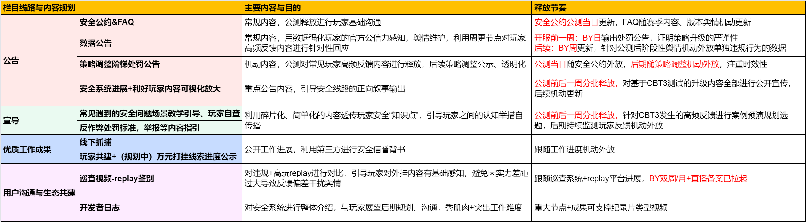
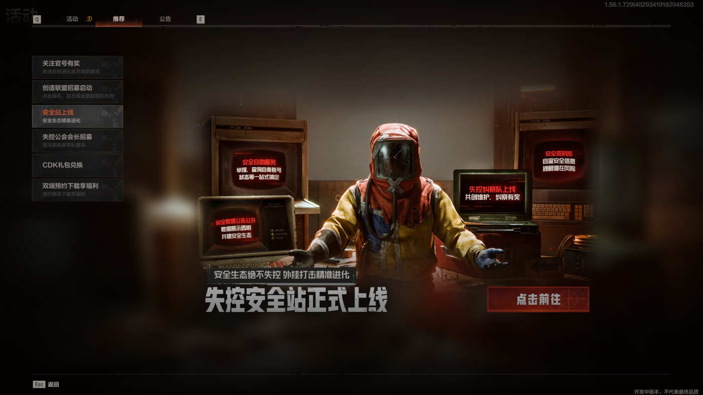

终极测试阶段 · 2026.2.3 — 3.31
| 主要痛点 | 情况说明 | 处理策略 |
|---|---|---|
| 👁 玩家感知引导弱 | 玩家因缺乏明确的申诉反馈闭环，或看不到处罚结果与治理进展，导致在任何热点内容下都会转而追问外挂 | 紧密监测舆情数据，提炼关键词，通过端外社媒发声手段强化玩家处理感知 |
| 🏛 官方公信力弱化 | 目前只公开了数据、表决心类沟通、措施手段，缺少明确判定标准给到玩家 | 已公开梯度处罚内容，透明化强化了处罚感知，并将负面表述转向玩法建议 |
| 📢 缺少正向叙事 | 社区去中心化的网络环境下，需要玩家公信力强的人进行引导，需要输出UGC内容 | 以线下打击外挂团队为切入点开展社媒整合推广；后续在UGC内容中增加正向叙事与灰色社交的占比 |
| 优先级 | 核心问题 | 观察的具体内容 | CBT3举措与效果 | 产品建议 | OBT规划 |
|---|---|---|---|---|---|
| P0 | 外挂泛滥、举报无效、举报时效性差，开挂成本低 |
玩家反映举报多次仍不封禁，外挂在公屏公然出售叫嚣，封禁延迟严重（3-7天），5元即可购买新号继续开挂，玩家呼吁封设备/封机器码 |
|
|
|
| P0 | 误封频发，严重影响游戏体验 |
反外挂系统频繁误封正常玩家，拆家第三方介入被判定非法组队，被举报过多自动封禁，玩家因设备环境问题被连续封禁 |
|
|
|
| P1 | 部分玩家质疑标准一致性 |
主播（如"包包""抖音牛大王"等）在直播中公然招募非法组队，普通玩家举报无效，形成严重的官方公信危机 |
|
回查官方KOC测试账号行为；搭建可信者库，确保正向案例内容；营造玩家等级规范氛围 |
|
| P1 | 玩家认为卡BUG应被纳入违规处罚 |
部分玩家反映卡BUG导致战局公平性失衡，且出现付费教学，操作简单但破坏了正常战局生态 | 对BUG修复进度公开化，但执行不充分，玩家感知仍停留在"没了会" | 将游戏战局平衡的BUG修复公开，出现此类型BUG加入工单审查全面的流程，进行梯度处罚 | 定点反馈玩家高频影响体验的BUG进行针对性回复 |
| P2 | 遇挂补偿感知弱 |
玩家反馈遭遇外挂后的补偿未收到，战损情绪感强，后期赛季节奏难以接受 | 针对性反馈，已进行奖励点数币的发放 |
|
前期安全系统官宣时按规模规划强玩家利好点，同步公示规划 |
| P2 | 玩家交易平台发现黑产内容，认为打击力度不足 |
少部分玩家反馈二手平台有黑产贩卖，且市场价格低，玩家感知差 | 已对快手、淘宝成熟程序进行处理，取得举报成效，并已与法务侧进行对齐 | 与法务侧密切沟通，持续下架，数量进行提高 | 与法务侧密切沟通，持续推进下架工作 |


负面占比主要围绕非法组队误封检测机制的讨论，占比20%。玩家对"被误封"的申诉路径不清晰，部分玩家认为官方FAQ未解答核心疑问。
后续已展开专项沟通，目前误封相关声量已稳定在 2% 及以下。
玩家普遍反馈外挂治理透明化程度低，进一步提出"大团队组队需求满足"建议。部分玩家认为梯度处罚标准仍不够清晰，希望官方公示更详细的判定逻辑。
研发侧后续将开展公会赛服、UGC列表服、8人模式服等大团队玩法满足需求。
玩家对卡BUG等行为导致的处罚判断机制表示不明确，认为目前有较低成本破坏战局公平性的行为，进一步提出对游戏违规行为对抗机制、模式选择的建议。
整体正面率较前两次公告有明显提升（+20%），说明透明化沟通策略初见成效。